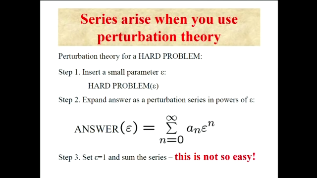
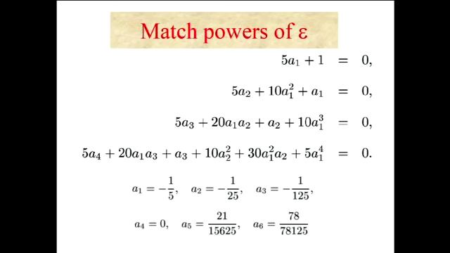
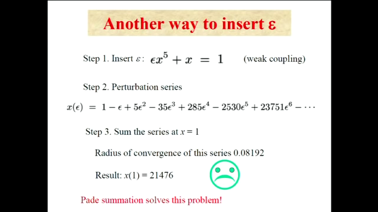
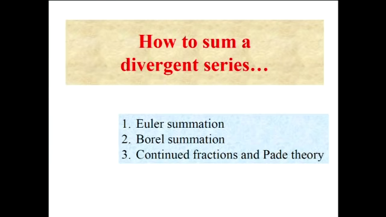
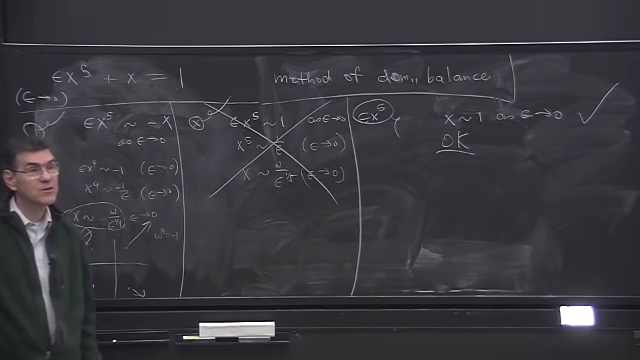

Mathematical Physics
Table of Contents
- 1. One style of Mathematical Physics is very very rigorous
- 2. But non-rigorous (yet) techniques are more powerful
- 3. How to Solve Hard Problems!!
- 3.1. Perturbation Theory
- 3.2. Example: Quintic Equation \(x^5 + x =1\) (Strong Coupling)
- 3.3. Asymptotic Mathematics
- 3.4. Another approach to the Quintic Equation (Weak Coupling)
- 3.5. Shanks Transformation - for accelerating convergent series
- 3.6. Pade Summation - To sum divergent Series
- 3.7. Asymptotics and Perturbation Theory
- 3.8. Weak vs Strong!!
- 3.9. Asymptotics
- 3.10. Our quintic problem
from Lecture by Carl Bender (posted in YouTube)
1. One style of Mathematical Physics is very very rigorous
2. But non-rigorous (yet) techniques are more powerful
Because more rigorous you are get the less powerful you are, because more general you are. Proving general problems are not much interesting.
3. How to Solve Hard Problems!!
Exact solutions for hard problems don't exist.
3.1. Perturbation Theory
 All the interesting problems are not exactly Two approaches:
- 0:03:54 Numerical Methods
0:04:21 Analytical Approaches to hard problems - Pertubation Theory
Pertubation Theory is one standard method for hard problems. There aren't other such techniques.
3.1.1. Insert a small parameter \(\epsilon\) into the problem
Convert one problem to infinite number of problems
3.1.2. Ans(\(\epsilon\)) = \(\sum_{n=0}^{\inf} a_n \epsilon^n\)
Assume the solution is a power series. (But it isn't always power series)
3.1.3. Then take \(\epsilon = 1\) & sum the series of coeff
- Begin with hard problem
- Reduce infinitely hard problem into a infinite sequence of relatively easy problems (\(a_0\) , \(a_1\) , …)
- Then calculate the coeffs. (i.e. soln of mini problems); then sum to get soln to inifinitely hard problem
- then set \(\epsilon = 1\) to find soln to original problem.
3.2. Example: Quintic Equation \(x^5 + x =1\) (Strong Coupling)
Step 1 is to put an \(\epsilon\)
\(x^5 + \epsilon x = 1\)
\(\epsilon = 0\) is the `unpertubred' problem
for \(\epsilon = 0\) the solution is \(x = 1\)
so solution is \(x = 1 + a_1 \epsilon + a_2 \epsilon^2 + \cdots\) Now,
\begin{equation*} (1+a_1 \epsilon+ a_2 \epsilon^2 + \cdots)^5 + \epsilon (1 + a_1 \epsilon + a_2 \epsilon^2 + \cdots) = 1 \end{equation*}Now expanding the 5th power and equation the coefficients of both sides (Note that to equate the coefficients on both side, the series has to converge because the argument is the that taylor expansion has to be unique for the coefficients to be equated which in turn requires that the series converges)
\begin{equation*} 1 + \epsilon (5a_1 + 1) + \epsilon^2 (a_1 + 5 a_2+ 10 a_1^2) + \epsilon^3 (\cdots) = 1 \end{equation*}So,
- \(a_1 = -1/5\)
- \(a_2 = -1/25\)
- …
Thus,
\begin{equation*} Ans = 1 - 1/5 \epsilon - 1/25 \epsilon^2 -1/125 \epsilon^3 - \cdots \end{equation*}Finally, the solution is obtained when we set \(\epsilon = 1\)

3.3. Asymptotic Mathematics
We were lucky that the series converged. Because the radius of convergence is 1.6493… and we used \(\epsilon = 1\). 0:29:57 But say if we had tried to solve \(x^5 + 2x = 1\) and put \(\epsilon = 2\) then we would have an divergent series. But we can also sum divergent series, if we leave exact mathematics and enter asymptotic mathematics (0:31:35)
3.3.1. Divergent Series converge faster than convergent series
0:32:48 Divergent series converges more rapidly than convergent series. We would be disappointed if we get an convergent series in perturbation :rofl:
3.4. Another approach to the Quintic Equation (Weak Coupling)
\(\epsilon x^5 + x = 1\)
For \(\epsilon = 0\) the solution is \(x=1\) The solution in terms of \(\epsilon\) is:
\begin{equation} x (\epsilon) = 1 + a_1 \epsilon + b \epsilon^2 + \cdots \end{equation}So, the original equation would be
< Collapse code block
x : 1 + sum(a[i]*\epsilon^i, i , 1, inf); tex(taylor(\epsilon * x^5 + x, \epsilon, 0, 4));
\[1+\left(a_{1}+1\right)\,\varepsilon+\left(5\,a_{1}+a_{2}\right)\, \varepsilon^2+\left(10\,a_{1}^2+5\,a_{2}+a_{3}\right)\,\varepsilon^3 +\left(10\,a_{1}^3+20\,a_{2}\,a_{1}+5\,a_{3}+a_{4}\right)\, \varepsilon^4+\cdots \]
This also gives the coefficients \(a_1, a_2, a_3, \cdots\) but it turns out that these coefficients are simpler than those in previous approach:
- \(a_1 = -1\)
- \(a_2 = 5\)
- \(a_3 = - 35\)
Now if we set \(\epsilon = 1\), we have a divergent series 
0:40:55
3.5. Shanks Transformation - for accelerating convergent series
3.6. Pade Summation - To sum divergent Series

3.7. Asymptotics and Perturbation Theory
3.7.1. Boundary layer theory - Special case of WKB
3.7.2. WKB Theory
3.7.3. Mulitple scale perturbation theory
3.8. Weak vs Strong!!
for \(x^5 + \epsilon x = 1\) when we went to \(\epsilon = 0\) nothing abrupt happened. There were five roots to the equation the whole time
But for \(\epsilon x^5 + x = 1\) when we went to \(\epsilon = 0\), the number of roots abruptly changed to zero. This is the cause behind the divergent series.
3.9. Asymptotics
=Exact mathematics~Asympotoic mathematics; Symbol is read as "is asymptotic to"
\(f(x) \sim g(x) \ \ (x \to x_0)\) This means \(\lim_{x \to x_0} \frac{f(x)}{g(x)} =1\) E.g.
- \(\sin(x) \sim x \ \ (x \to 0)\)
- \(e^x \sim x \ \ (x \to 0)\)
0:54:20 Asymptotics is a way of simplifying complicated function with simpler functions.
Note that: nothing is asymptotic to zero. So, \(x^3 \sim 0 \ \ (x \to 0)\) is wrong. so is \(x^3 \sim x \ \ (x \to 0)\) Because the ratio of the limit is not one.
<<"is negligible compared with"
This is not same as `is very less than' because \(1 << -x^2 \ \ (x \to \infty)\) \(f(x) << g(x)\) means \(\lim_{x \to x_0} \frac{f(x)}{g(x)} = 0\)
3.10. Our quintic problem
Lets look at \(\epsilon x^5 + x = 1\) as \(\epsilon \to 0\)
\begin{align*} f(x) + g(x) = h(x) \\ \textrm{if } g(x) << f(x)\ as\ x \to x_0 \\ \textrm{then } f(x) \sim h(x) \end{align*}3.10.1. Method of dominant balance
Assume that one of the two terms is negligible and other two are asymptotic to each other
Dominant means all of the terms in the equation dominate over other terms.
There are three possibilities:
As \(\epsilon \to 0\)
- \(\epsilon x^5 \sim -x\)
- \(\epsilon x^5 \sim 1\)
- \(x \sim 1\)
If we look at second expression, we throw away x by saying x << 1 & x << \(\epsilon x^5\) but \(\epsilon x^5 \sim 1\) (as \(\epsilon \to 0\) ) then \(x \sim \frac {1} {\epsilon^{1/5}}\) which is infinity. So, this is not possible.
But the first and third one are valid.
First: When we neglect one wrt to \(\epsilon x^5\) and \(x\); \(x \sim \frac {\omega}{\epsilon^{1/4}} \ \ (\epsilon \to 0)\) ; where \(\omega\) is 5th root of unity.
1:11:25 We have calculated the other four roots which go to inifinity. 